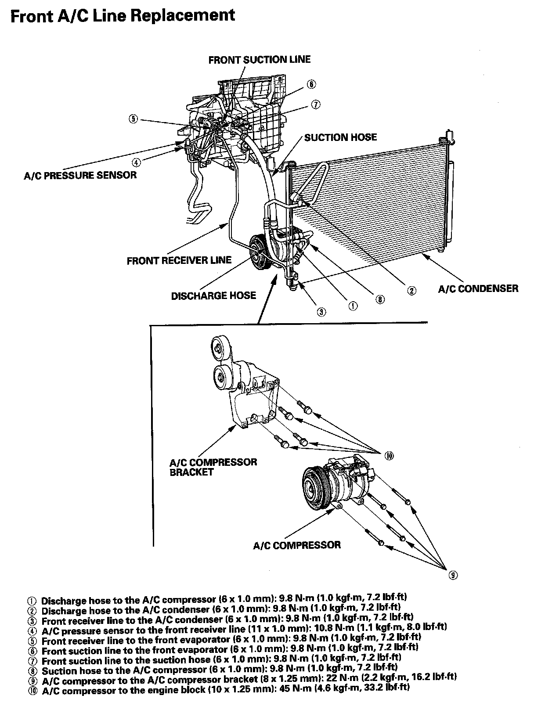

Operation CHARM
: Car repair manuals for everyone.
Home
>>
Acura
>>
2007
>>
MDX V6-3.7L
>>
Repair and Diagnosis
>>
Heating and Air Conditioning
>>
Hose/Line HVAC
>>
Service and Repair
>>
Front A/C Line Replacement
Front A/C Line Replacement
Front A/C Line Replacement:
